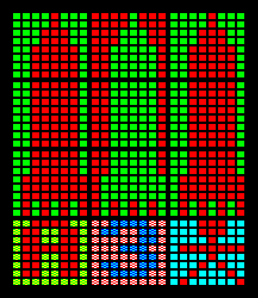

VDU 0-6, 8-31, 127. OSWORD 9, 11, 12; VDUCHR entry point; Swap cursor variables; Check text or graphics cursor active; Hardware scrolling; Scroll in paged mode - 1629 bytes (9.9%)
- §1. Note about the BBC Micro Character Set (it's almost, but not quite 7-bit ASCII)
- §2. VDUCHR entry point
- §3. handleDeleteCharacter
- §4. VDU 0 / 6 / 27 Empty handlers
- §5. vduParametersAreOutstanding
- §6. VDU 1 Send next byte to printer only
- §7. explicitAddressNoParameters
- §8. exitVDUCHR
- §9. reswapCursorsBack
- §10. checkForVDUReenable
- §11. Check whether the text or graphics cursor is active
- §12. VDU 14 Set paged mode
- §13. VDU 2 Printer On
- §14. VDU 21 Disable VDU drivers
- §15. VDU 3 Printer off
- §16. VDU 15 Paged mode off
- §17. VDU 4 Select text cursor
- §18. VDU 5 Select graphics cursor
- §19. VDU 8 Cursor left (.charBACKSPACE)
- §20. wrapFromLeftEdgeToRightEdgeOfTextWindow
- §21. cursorAtTopOfTextWindow
- §22. moveGraphicsCursorLeftEightPixels
- §23. Move graphics cursor (left or down)
- §24. VDU 11 Cursor up
- §25. VDU 9 Cursor right
- §26. moveTextCursorToLeftEdgeAndDown
- §27. moveTextCursorDown
- §28. clearOneLineAndPositionCursor
- §29. Set cursor address
- §30. moveGraphicsCursorRightEightPixels
- §31. Move graphics cursor (up or right)
- §32. VDU 10 Cursor down
- §33. VDU 28 Define Text Window
- §34. OSWORD 9 - Read a pixel
- §35. OSWORD 11 - Read palette
- §36. VDU 12 Clear text or graphics window
- §37. VDU 30 Home Cursor
- §38. VDU 31 Position text cursor
- §39. VDU 13 Carriage Return (.charRETURN)
- §40. clearGraphicsWindowAndHomeGraphicsCursor
- §41. VDU 16 Clear graphics window
- §42. VDU 17 Define text colour
- §43. VDU 18 Define graphics colour
- §44. setGraphicsGCOLColour
- §45. restoreMODE7TextBackgroundColour
- §46. VDU 20 Restore default colours
- §47. VDU 19 Write palette
- §48. OSWORD 12 - Write Palette
- §49. VDU 22 Select MODE
- §50. VDU 23 Define Character
- §51. Plot extension
- §52. VDU 23 with 0-31 as the next byte
- §53. vdu23CommaZeroSetCRTCRegister
- §54. setCRTCRegisterDirect
- §55. VDU 25 Plot
- §56. Hardware screen scroll up/down
- §57. VDU 26 Reset to default windows
- §58. Set cursor screen address
- §59. Set hardware screen or cursor address
- §60. Write to two sequential registers on the CRTC
- §61. VDU 24 Define graphics window
- §62. exchangeGraphicsCursorPositionWithWorkspaceABCD
- §63. calculateBytesPerTextWindowRow
- §64. VDU 29 Set graphics origin
- §65. VDU 127 Delete
- §66. deleteCharacterInMODE7
- §67. deleteCharacterAtGraphicsCursor
- §68. addNumberOfBytesInACharacterRowToAX
- §69. Paged mode scrolling
- §70. clearPagedModeCounter
§1. Note about the BBC Micro Character Set (it's almost, but not quite 7-bit ASCII).
One of the main tasks for OSWRCH is to draw characters to the screen. The VDUCHR routine performs this job. In particular, with A in the range 32-126 these are the 'printable' characters. They result in a visual character appearing on screen. They almost match the standard 7-bit ASCII character set. The exception being ASCII CODE 96 '`' (GRAVE ACCENT) which is not available. When this code is used with OSWRCH, a pound sign '£' is displayed instead. For character definitions, see Chapter 4: Character definitions and VDU tables. Additionally, MODE 7 (the TELETEXT mode) has a different character set from ASCII, which means 10 of the ASCII printable characters can't be displayed. Substitutions are made as follows: ASCII CODE 91 '[' is displayed as an arrow pointing left ASCII CODE 92 '\' is displayed as the fraction 1/2 ASCII CODE 93 ']' is displayed as an arrow pointing right ASCII CODE 94 '^' is displayed as an arrow pointing up ASCII CODE 95 '_' is displayed as a dash ASCII CODE 96 '`' is displayed as a pound sign ASCII CODE 123 '{' is displayed as the fraction 1/4 ASCII CODE 124 '|' is displayed as a double vertical bar ASCII CODE 125 '}' is displayed as the fraction 3/4 ASCII CODE 126 '~' is displayed as the divide symbol Note that when writing directly to the display memory in MODE 7 this gives different results in three cases to printing via OSWRCH. See .teletextCharacterConversionTable The character being output is interpreted as below: Character Range Description 0-31 Control characters, which are interpreted as a whole range of special commands. Multiple bytes may need to be output to complete the command. Each VDU command is described at it's own entry point which are listed in a table (See .vduEntryPointTableLow). 32-126 Printable ASCII(-ish) characters as described above. 127 Delete character. Attempts to remove the previous printed character from the screen at the text or graphics cursor (whichever is active). 128-255 Available for users programs as soft characters (see .osbyte20EntryPoint). In MODE 7 these control the appearance of Teletext characters.
This is a limited version of OSWRCH that assumes output is to the display only, not to Econet, the printer, RS-423, nor SPOOLed to a file. It assumes the VDU drivers are enabled.
.vduChrEntryPoint = $c4c0 LDX .twosComplimentOfNumberOfBytesInVDUQueue get the number of items in the VDU queue BNE .vduParametersAreOutstanding if (parameters are still needed) then branch BIT .vduStatusByte test VDU status byte BVC + if (cursor editing mode is NOT active) then branch forward handle cursor editing mode... JSR .exchangeTextCursorAndInputCursorValues temporarily swap the text cursor and input cursor coordinates JSR .setUpWriteCursor set up write cursor BMI + if (display is disabled) then branch forward CMP #.charRETURN BNE + if (character is not RETURN) then branch forward JSR .terminateEdit terminate editing + CMP #.charDELETE BEQ .handleDeleteCharacter if (character is DELETE) then branch CMP #.charSPACE BCC .readVDUEntryPointAddressAndParameters if (character less than space, i.e. a VDU control code) then branch BIT .vduStatusByte test VDU status byte again BMI + if (screen disabled) then branch forward JSR .displayACharacter display a character JSR .vdu9EntryPoint and cursor right + JMP .exitVDUCHR
.handleDeleteCharacter = $c4ed LDA #.vduEntryPointTableDelete - .vduEntryPointTableLow index to read the vdu entry point table for DELETE .readVDUEntryPointAddressAndParameters = $c4ef TAY store the VDU number in Y LDA .vduEntryPointTableLow,Y get low byte of entry point address STA .vduJumpVectorLow store it in jump vector LDA .vduEntryPointTableHigh,Y get high byte of entry point address BMI .explicitAddressNoParameters if (a direct access with no parameters) then branch TAX X=A ORA #%11110000 set up negated parameter count (set bits in top nybble) STA .twosComplimentOfNumberOfBytesInVDUQueue store it back as number of items in VDU queue TXA get back A LSR } LSR } LSR } get high nybble into low nybble LSR } CLC clear carry ADC #>.vduBaseAddress add base address (high byte) to get high byte of VDU entry point address STA .vduJumpVectorHigh BIT .vduStatusByte check for cursor editing mode enabled BVS .reexchangeCursorsAndExit if (cursor editing mode enabled) then branch (re-exchange cursors) CLC clear carry fall through...
§4. VDU 0 / 6 / 27 Empty handlers.
VDU 0 - Does nothing VDU 6 - Enable VDU drivers (re-enabling is handled prior to here, see .checkForVDUReenable) VDU 27 - ESCAPE code, does nothing
.vdu0EntryPoint = $c511 .vdu6EntryPoint = $c511 .vdu27EntryPoint = $c511 .exit = $c511 RTS
§5. vduParametersAreOutstanding.
.vduParametersAreOutstanding = $c512 STA .vduQueueEndByte-$FF,X store parameter in vdu queue (X = 256 - number of parameters i.e. X=$FF for 1, $FE for 2 etc.) INX increment X STX .twosComplimentOfNumberOfBytesInVDUQueue store it as number of bytes in VDU queue (2's complement) BNE .clearCarryAndExit if (more parameters are needed) then branch BIT .vduStatusByte test VDU status byte BMI .preVDU1 if (VDU disabled) then branch to VDU 1 code BVS .handleCursorEditing if (cursor editing mode) then branch JSR .executeRequiredVDUFunction execute required function for VDU command CLC clear carry RTS .handleCursorEditing = $c526 JSR .exchangeTextCursorAndInputCursorValues swap values of cursors JSR .setUpWriteCursor set up write cursor JSR .executeRequiredVDUFunction execute required function for VDU command .reexchangeCursorsAndExit = $c52f JSR .reswapCursorsBack re-exchange cursors .clearCarryAndExit = $c532 CLC carry clear RTS .preVDU1 = $c534 LDY .vduJumpVectorHigh check the upper byte of entry point address CPY #>.vdu1EntryPoint check for the default handler BNE .clearCarryAndExit if (not the default handler) then branch (exit) fall through...
§6. VDU 1 Send next byte to printer only.
.vdu1EntryPoint = $c53b TAX remember A LDA .vduStatusByte get VDU status byte LSR get bit 0 into carry (printer enabled bit) BCC .exit if (printer not enabled) then branch (exit) TXA restore A JMP .sendValidByteToPrinter send byte in A (next byte) to printer
§7. explicitAddressNoParameters.
.explicitAddressNoParameters = $c545 STA .vduJumpVectorHigh upper byte of link address TYA restore A (the VDU number) set carry if VDU number is within range 8-13 (cursor movement) CMP #8 BCC + if (VDU number < 8) then branch (carry clear) EOR #$FF invert value CMP #$F2 if (VDU number > 13) then clear carry EOR #$FF re-invert value back again + BIT .vduStatusByte test VDU status byte BMI .checkForVDUReenable if (VDU disabled) then branch PHP push flags JSR .executeRequiredVDUFunction execute required function PLP pull flags back BCC + if (not VDU 8-13 cursor movement) then branch (skip 'printer enabled' check) fall through...
.exitVDUCHR = $c55e LDA .vduStatusByte read VDU status byte LSR carry is set if printer is enabled + BIT .vduStatusByte test VDU status byte BVC .exit if (no cursor editing mode) then branch fall through...
.reswapCursorsBack = $c565 JSR .restoreWriteCursor restore normal write cursor .exchangeTextCursorAndInputCursorValues = $c568 PHP save flags PHA save A LDX #.vduTextCursorXPosition - .vduVariablesStart offset within VDU variables for text cursor position LDY #.vduTextInputCursorXCoordinate - .vduVariablesStart offset within VDU variables for text input cursor position JSR .exchangeTwoVDUBytes exchange current text cursor coordinates with text input cursor coordinates JSR .setTextCursorScreenAddresses set cursor screen addresses JSR .setHardwareCursorAddress set cursor position LDA .vduStatusByte get VDU status byte EOR #%00000010 invert bit 1 to allow or inhibit scrolling STA .vduStatusByte store VDU status byte PLA restore flags PLP restore A RTS
.checkForVDUReenable = $c580 EOR #6 check for VDU 6 (to reenable output to the display) BNE .exit1 if (not VDU 6) then branch (exit) LDA #%01111111 set A to clear the top bit of the VDU status byte BCC .clearVDUStatusByteFlags ALWAYS branch, clearing the top bit (enabling output to the display again)
§11. Check whether the text or graphics cursor is active.
On Exit: A = 0 if text cursor is active (Z flag set) A = $20 otherwise (graphics cursor active) (Z flag clear)
.isTextCursorActive = $c588 LDA .vduStatusByte VDU status byte AND #%00100000 test bit 5 of status byte .exit1 = $c58c RTS
.vdu14EntryPoint = $c58d LDY #0 Y = 0 STY .pagedModeCounter paged mode counter LDA #4 A = 4 BNE .setVDUStatusByteFlags ALWAYS branch
.vdu2EntryPoint = $c596 JSR .printerServiceCall select printer buffer LDA #$94 A=$94 when inverted at next statement this = 1 thereby setting bit 0 of the VDU status byte (printer output enable) fall through...
§14. VDU 21 Disable VDU drivers.
Output to the VDU is disabled (until a VDU 6 is used to re-enable output).
.vdu21EntryPoint = $c59b EOR #$95 if A=21 (entry from VDU 21) then A = $80 if A=$94 (entry from VDU 2) then A = 1 .setVDUStatusByteFlags = $c59d ORA .vduStatusByte VDU status byte set bit 0 or bit 7 BNE .storeVDUStatusByteAndReturn ALWAYS branch (since A != 0)
.vdu3EntryPoint = $c5a1 JSR .printerServiceCall select printer buffer LDA #10 fall through...
On Entry: A = 15 paged mode off A = 10 printer off
.vdu15EntryPoint = $c5a6 EOR #$F4 convert to $FB or $FE to clear bit 2 or 1 respectively .clearVDUStatusByteFlags = $c5a8 AND .vduStatusByte AND with VDU status byte .storeVDUStatusByteAndReturn = $c5aa STA .vduStatusByte store VDU status byte - RTS
§17. VDU 4 Select text cursor.
At all times either the text cursor is active or the graphics cursor is active Characters are either drawn normally in text cells (at the text cursor) or at any pixel position (the graphics cursor)
.vdu4EntryPoint = $c5ad LDA .vduPixelsPerByteMinusOne pixels per byte BEQ - if (not in graphics MODE) then branch (return) JSR .setTextCursor set text cursor (CRTC hardware) LDA #%11011111 clear bit 5 (graphics cursor bit) BNE .clearVDUStatusByteFlags ALWAYS branch - clear bit 5 and exit
§18. VDU 5 Select graphics cursor.
.vdu5EntryPoint = $c5b9 LDA .vduPixelsPerByteMinusOne pixels per byte minus one BEQ - if (not in graphics MODE) then branch (return) LDA #32 cursor setting JSR .setCursorOnOrOff turn off cursor BNE .setVDUStatusByteFlags ALWAYS branch - set bit 5 of VDU status byte and exit
§19. VDU 8 Cursor left (.charBACKSPACE).
.vdu8EntryPoint = $c5c5 JSR .isTextCursorActive set A=0 if text cursor is active or A=$20 if graphics cursor BNE .moveGraphicsCursorLeftEightPixels if (currently in graphics cursor mode) then branch (to move cursor left 8 pixels) DEC .vduTextCursorXPosition decrement text column LDX .vduTextCursorXPosition get new text column CPX .vduTextWindowLeft check against left of text window BMI .wrapFromLeftEdgeToRightEdgeOfTextWindow if (less than left edge of text window) then branch (wrap to right edge and one line up) LDA .vduTextCursorCRTCAddressLow get text cursor CRTC address (low) SEC SBC .vduBytesPerCharacter subtract bytes per character TAX put in X LDA .vduTextCursorCRTCAddressHigh get text cursor CRTC address (high) SBC #0 subtract 0 + carry CMP .vduStartScreenAddressHighByte compare with high byte of screen RAM address BCS + if (text cursor is not below the start of the screen address) then branch forward ADC .vduScreenSizeHighByte add screen RAM size high byte to wrap back onto screen + TAY Y=A JMP .setTextCursorCRTCAddress A high and X low byte of cursor address
§20. wrapFromLeftEdgeToRightEdgeOfTextWindow.
.wrapFromLeftEdgeToRightEdgeOfTextWindow = $c5ee LDA .vduTextWindowRight load text window right edge STA .vduTextCursorXPosition set current text column .cursorUp = $c5f4 DEC .pagedModeCounter paged mode counter BPL + if (not less than zero) then branch (skip next instruction) INC .pagedModeCounter paged mode counter to restore X=0 + LDX .vduTextCursorYPosition current text line CPX .vduTextWindowTop top of text window BEQ .cursorAtTopOfTextWindow if (it's at the top of the text window) then branch DEC .vduTextCursorYPosition decrement current text line JMP .setCursorSoftwareAndHardwarePosition set cursor position
.cursorAtTopOfTextWindow = $c60a CLC clear carry JSR .moveTextCursorToNextLine move cursor LDA #%00001000 A=8 to check for software scrolling BIT .vduStatusByte test VDU status byte BNE + if (software scrolling enabled) then branch forward JSR .hardwareScrollDown scroll down BNE .skipScrolling branch + JSR .scrollTextWindowDownwards soft scroll 1 line .skipScrolling = $c61c JMP .clearOneLineAndPositionCursor clear one line and exit
§22. moveGraphicsCursorLeftEightPixels.
.moveGraphicsCursorLeftEightPixels = $c61f LDX #0 X = 0 to select horizontal movement (move left) fall through...
§23. Move graphics cursor (left or down).
On Entry: X = 0 to move left or X = 2 to move down
.moveGraphicsCursorLeftOrDownEightPixels = $c621 STX .vduTempStoreDB store X JSR .checkGraphicsCursorIsWithinGraphicsWindow check window bounds LDX .vduTempStoreDB restore X SEC set carry LDA .vduGraphicsCursorPixelsXLow,X current graphics cursor (X=2 for vertical movement) SBC #8 subtract 8 to move back/down 1 character STA .vduGraphicsCursorPixelsXLow,X store in current graphics cursor (X=2 for vertical movement) BCS + if (carry set, no need to adjust high byte) then branch forward DEC .vduGraphicsCursorPixelsXHigh,X decrement high byte of graphics cursor + LDA .vduTempStoreDA check the old graphics cursor position BNE .setUpExternalGraphicsCoordinates if (old graphics position out of the graphics window bounds) then branch JSR .checkGraphicsCursorIsWithinGraphicsWindow check the new graphics cursor position BEQ .setUpExternalGraphicsCoordinates if (not out of bounds now) then branch this is the case where the old coordinates were within the window, but now are not. when moving left, then move up and clamp to the right edge. when moving down, clamp to the top edge. LDX .vduTempStoreDB get back X LDA .vduGraphicsWindowPixelsRightLow,X get graphics window right (X=0) or top (X=2) CPX #1 BCS + if (moving down) then branch forward SBC #6 moving left. A = A - 7 (note carry is clear) + STA .vduGraphicsCursorPixelsXLow,X current graphics cursor position (X=2 means vertical) LDA .vduGraphicsWindowPixelsRightHigh,X graphics window right (X=0) or top (X=2) high byte SBC #0 subtract carry STA .vduGraphicsCursorPixelsXHigh,X current graphics cursor position (X=2 means vertical) TXA BEQ .graphicsCursorUpEightPixels if (moving left) then branch (because we've hit the left edge, move graphics cursor up) .setUpExternalGraphicsCoordinates = $c658 JMP .convertPixelGraphicsCoordinatesToExternal set up external coordinates for graphics
.vdu11EntryPoint = $c65b JSR .isTextCursorActive set A=0 if text cursor is active; A=$20 if graphics cursor BEQ .cursorUp if (text cursor is active) then branch .graphicsCursorUpEightPixels = $c660 LDX #2 set X = 2 for moving graphics cursor UP BNE .moveGraphicsCursorUpOrRightEightPixels ALWAYS branch
.vdu9EntryPoint = $c664 LDA .vduStatusByte get VDU status byte AND #%00100000 check bit 5 (graphics cursor) BNE .moveGraphicsCursorRightEightPixels if (graphics cursor in use) then branch LDX .vduTextCursorXPosition text column CPX .vduTextWindowRight text window right BCS .moveTextCursorToLeftEdgeAndDown if (X exceeds window right) then branch INC .vduTextCursorXPosition text column LDA .vduTextCursorCRTCAddressLow text cursor CRTC address low ADC .vduBytesPerCharacter add bytes per character TAX X = new low byte of CRTC address LDA .vduTextCursorCRTCAddressHigh text cursor CRTC address high ADC #0 add carry. A = new high byte of CRTC address JMP .setTextCursorCRTCAddress use X and A to set new text cursor CRTC address
§26. moveTextCursorToLeftEdgeAndDown.
.moveTextCursorToLeftEdgeAndDown = $c684 LDA .vduTextWindowLeft text window left STA .vduTextCursorXPosition text column fall through...
.moveTextCursorDown = $c68a CLC clear carry JSR .handleScrollingInPagedModeInternal check text window bottom edge, X=line count LDX .vduTextCursorYPosition current text line CPX .vduTextWindowBottom bottom edge BCS + if (current text Y position => bottom edge) then branch INC .vduTextCursorYPosition increment current text line BCC .setCursorSoftwareAndHardwarePosition ALWAYS branch (set cursor position) + JSR .moveTextCursorToNextLine move cursor to next line LDA #%00001000 check bit 3 (software scrolling) BIT .vduStatusByte test VDU status byte BNE + if (software scrolling enabled) then branch JSR .hardwareScrollUp perform hardware scroll BNE .clearOneLineAndPositionCursor + JSR .scrollTextWindowUpwards execute upward software scroll fall through...
§28. clearOneLineAndPositionCursor.
.clearOneLineAndPositionCursor = $c6ac JSR .clearOneLine clear a line fall through...
Calculates cursor screen addresses and sets the hardware
.setCursorSoftwareAndHardwarePosition = $c6af JSR .setTextCursorScreenAddresses set cursor screen addresses BCC .setHardwareCursorAddressLocal ALWAYS branch
§30. moveGraphicsCursorRightEightPixels.
.moveGraphicsCursorRightEightPixels = $c6b4 LDX #0 X=0 for move cursor right fall through...
§31. Move graphics cursor (up or right).
On Entry: X = 0 means move graphics cursor right X = 2 means move graphics cursor up
.moveGraphicsCursorUpOrRightEightPixels = $c6b6 STX .vduTempStoreDB store X JSR .checkGraphicsCursorIsWithinGraphicsWindow check window bounds LDX .vduTempStoreDB recall X CLC LDA .vduGraphicsCursorPixelsXLow,X get current graphics cursor (low) ADC #8 add 8 pixels STA .vduGraphicsCursorPixelsXLow,X set current graphics cursor (low) BCC + INC .vduGraphicsCursorPixelsXHigh,X set current graphics cursor (high) + LDA .vduTempStoreDA A=0 no window violations, 1 or 2 indicates violation BNE .setUpExternalGraphicsCoordinates if (outside graphics window) then branch JSR .checkGraphicsCursorIsWithinGraphicsWindow check window bounds BEQ .setUpExternalGraphicsCoordinates if (within graphics window) then branch LDX .vduTempStoreDB get back X LDA .vduGraphicsWindowPixelsLeftLow,X get left/bottom edge of graphics window (low) (X=0 means left, else X=2 means bottom) CPX #1 BCC + if (X is 0; hit left edge) then branch ADC #6 A = A + 7 (including carry) + STA .vduGraphicsCursorPixelsXLow,X set current graphics cursor position (low) LDA .vduGraphicsWindowPixelsLeftHigh,X get left edge (high) ADC #0 add carry STA .vduGraphicsCursorPixelsXHigh,X set current graphics cursor position (high) TXA A=X BEQ .graphicsCursorDown if (X = 0) then branch (move graphics cursor down) JMP .convertPixelGraphicsCoordinatesToExternal set up external coordinates for graphics
.vdu10EntryPoint = $c6f0 JSR .isTextCursorActive set A=0 if text cursor is active; A=$20 if graphics cursor BEQ .moveTextCursorDown if (text cursor active) then branch .graphicsCursorDown = $c6f5 LDX #2 X = 2 to indicate movement down JMP .moveGraphicsCursorLeftOrDownEightPixels move graphics cursor down
§33. VDU 28 Define Text Window.
A sub-rectangle on screen can be defined that limits where text can be drawn.
.vdu28ParamLeftEdge = .vduQueueEndByte - 3 .vdu28ParamBottomEdge = .vduQueueEndByte - 2 .vdu28ParamRightEdge = .vduQueueEndByte - 1 .vdu28ParamTopEdge = .vduQueueEndByte Note that last parameter is always in 0323 .vdu28EntryPoint = $c6fa LDX .vduCurrentScreenMODE get current screen MODE LDA .vdu28ParamBottomEdge get bottom edge CMP .vdu28ParamTopEdge compare with top edge BCC .exit2 if (bottom edge exceeds top edge) then branch (return) CMP .textWindowBottomRowTable,X check against text window bottom edge maximum BEQ + if (on the edge) then branch (it's OK) BCS .exit2 if (outside bounds) then branch (exit) + LDA .vdu28ParamRightEdge get right edge TAY put it in Y CMP .textWindowRightColumnTable,X text window right hand edge maximum BEQ + if (on the edge) then branch (it's OK) BCS .exit2 if (outside bounds) then branch (exit) + SEC set carry to subtract SBC .vdu28ParamLeftEdge left edge BMI .exit2 if (left edge greater than right) then branch (exit) TAY A=Y (window width) JSR .calculateBytesPerTextWindowRow calculate number of bytes in a text window row LDA #%00001000 set bit 3 of .vduStatusByte JSR .setVDUStatusByteFlags indicating that text window is defined LDX #.vdu28ParamLeftEdge - .vduVariablesStart point to parameters LDY #.vduTextWindowLeft - .vduVariablesStart point to text window edges JSR .copyFourBytesWithinVDUVariables copy 4 parameters into the text window edges JSR .validatePositionAndSetupScreenAddress check ok and set up screen address BCS .vdu30EntryPoint home cursor within window .setHardwareCursorAddressLocal = $c732 JMP .setHardwareCursorAddress set cursor position
On Entry: .oswordA = 9 .oswordX = low byte of parameter block address .oswordY = high byte of parameter block address .oswordX/Y is the address of the four bytes of parameters: byte 0-1: X coordinate byte 2-3: Y coordinate On Exit: Result stored in byte 4 of parameter block: $FF if point was off screen, or logical colour of point if on screen
.osword9EntryPoint = $c735 LDY #3 Y is loop counter - LDA (.oswordX),Y get it STA .vduWorkspaceA,Y store it DEY decrement counter BPL - loop back until done LDA #.vduWorkspaceA - .vduVariablesStart JSR .readPixel LDY #4 Y=4 BNE .storeAInParameterBlock ALWAYS branch
§35. OSWORD 11 - Read palette.
On Entry: Y = 0 .oswordA = 11 .osWordX = low byte of parameter block address .osWordY = high byte of parameter block address .oswordX/Y is the address of the four byte parameter block: byte 0: logical colour to read On Exit: byte 0: logical colour byte 1: physical colour byte 2: zero byte 3: zero
.osword11EntryPoint = $c748 AND .vduNumberOfLogicalColoursMinusOne number of logical colours less 1 TAX put it in X LDA .vduColourPaletteStart,X get value from colour palette - INY increment Y to point to byte 1 .storeAInParameterBlock = $c750 STA (.oswordX),Y store data LDA #0 issue 0s CPY #4 to next bytes until Y=4 BNE - .exit2 = $c758 RTS
§36. VDU 12 Clear text or graphics window.
.vdu12EntryPoint = $c759 JSR .isTextCursorActive set A=0 if text cursor is active; A=$20 if graphics cursor BNE .clearGraphicsWindowAndHomeGraphicsCursor if (graphics cursor active) then branch (clear graphics area) LDA .vduStatusByte VDU status byte AND #%00001000 check if software scrolling (text window set) BNE + if (software scrolling) then branch JMP .initializeDisplayAndHomeCursor initialise screen display and home cursor + LDX .vduTextWindowTop top of text window - STX .vduTextCursorYPosition current text line JSR .clearOneLine clear a line LDX .vduTextCursorYPosition current text line CPX .vduTextWindowBottom bottom edge INX X=X+1 BCC - if (not reached bottom edge yet) then branch (loop back and clear the next row) fall through...
Moves the current cursor (text or graphics) to the top left of the defined text or graphics window.
.vdu30EntryPoint = $c779 JSR .isTextCursorActive set A=0 if text cursor is active; A=$20 if graphics cursor BEQ .homeTextCursor if (text cursor active) then branch JMP .graphicsCursorHome home graphic cursor .homeTextCursor = $c781 STA .vdu31ParamYCoordinate store 0 in last two parameters STA .vdu31ParamXCoordinate fall through...
§38. VDU 31 Position text cursor.
.vdu31ParamXCoordinate = .vduQueueEndByte - 1 .vdu31ParamYCoordinate = .vduQueueEndByte .vdu31EntryPoint = $c787 JSR .isTextCursorActive set A=0 if text cursor is active; A=$20 if graphics cursor BNE .exit2 if (graphics cursor active) then branch (exit) JSR + exchange text column/line with workspace .vduWorkspaceA/B CLC clear carry LDA .vdu31ParamXCoordinate get X coordinate ADC .vduTextWindowLeft add to text window left STA .vduTextCursorXPosition store as text column LDA .vdu31ParamYCoordinate get Y coordinate CLC ADC .vduTextWindowTop add top of text window STA .vduTextCursorYPosition current text line JSR .validatePositionAndSetupScreenAddress set up screen address BCC .setHardwareCursorAddressLocal if (carry clear, ie. on screen) then branch (set cursor position) + LDX #.vduTextCursorXPosition - .vduVariablesStart point to text cursor position (low byte) LDY #.vduWorkspaceA - .vduVariablesStart point to vdu workspace (low byte) JMP .exchangeTwoVDUBytes exchange text cursor position with workspace .vduWorkspaceA/B
§39. VDU 13 Carriage Return (.charRETURN).
.vdu13EntryPoint = $c7af JSR .isTextCursorActive set A=0 if text cursor is active; A=$20 if graphics cursor BEQ + if (text cursor active) then branch JMP .setGraphicsCursorToLeftHandColumn set graphics cursor to left hand columm + JSR .setTextCursorToLeftHandColumn set text column to left hand column JMP .setCursorSoftwareAndHardwarePosition set cursor position
§40. clearGraphicsWindowAndHomeGraphicsCursor.
.clearGraphicsWindowAndHomeGraphicsCursor = $c7bd JSR .graphicsCursorHome home graphic cursor fall through...
§41. VDU 16 Clear graphics window.
.vdu16EntryPoint = $c7c0 LDA .vduPixelsPerByteMinusOne pixels per byte BEQ .exitNoGraphics if (current MODE has no graphics) then branch (exit) LDX .vduBackgroundGraphicsColour background graphics colour LDY .vduBackgroundGCOLMode background graphics plot mode (GCOL n) JSR .setGraphicsColourMaskXY set graphics byte mask in .vduGraphicsColourByteOR/EOR LDX #.vduGraphicsWindowPixelsLeftLow - .vduVariablesStart source = graphics window LDY #.vduWorkspaceA - .vduVariablesStart destination = workspace A to H JSR .copyEightBytesWithinVDUVariables copy graphics window coordinates to workspace SEC set carry LDA .vduGraphicsWindowPixelsTopLow graphics window top low SBC .vduGraphicsWindowPixelsBottomLow graphics window bottom low TAY Y=difference INY increment STY .vduClearGraphicsWindowLineCount and store in workspace (this is line count) - LDX #.vduWorkspaceE - .vduVariablesStart graphics window right column LDY #.vduWorkspaceA - .vduVariablesStart graphics window left column JSR .fillRow fillRow LDA .vduWorkspaceG decrement window height in pixels BNE + DEC .vduWorkspaceH + DEC .vduWorkspaceG DEC .vduClearGraphicsWindowLineCount decrement line count BNE - if (not zero) then branch (do it again) .exitNoGraphics = $c7f8 RTS
§42. VDU 17 Define text colour.
The parameter is the logical colour to use as the current text foreground colour. If the top bit is set, then the current text background is changed. This is the equivalent of BASIC's COLOUR command.
.vdu17EntryPoint = $c7f9 LDY #0 Y = 0 (to set text foreground colour) BEQ .defineTextOrGraphicsColour ALWAYS branch
§43. VDU 18 Define graphics colour.
This sets the current graphics foreground or background colour. It is the equivalent of BASIC's GCOL command. The first parameter is the GCOL mode: 0=Normal, 1=OR, 2=AND, 3=EOR, 4=Invert This signifies how to modify the colour of pixels that will be drawn in the future. This can depend on both the current graphics colour and the colour of the current pixel already on screen. The second parameter: bits 0-6 is the logical colour to use. bit 7 set indicates that the current background colour should be set, otherwise the current foreground colour is set.
.vdu18ParameterGCOLNumber = .vduQueueEndByte-1 .vdu18ParameterLogicalColour = .vduQueueEndByte .vdu18EntryPoint = $c7fd LDY #2 Y = 2 (to set graphics foreground colour) .defineTextOrGraphicsColour = $c7ff LDA .vdu18ParameterLogicalColour get last parameter BPL + if (not negative, it's a foreground colour) then branch INY increment y (to set graphics background colour) + AND .vduNumberOfLogicalColoursMinusOne ensure colour is at most 'number of logical colours less 1' STA .vduTempStoreDA store it LDA .vduNumberOfLogicalColoursMinusOne number of logical colours less 1 BEQ .exit3 if (not in a graphics MODE) then branch (exit) AND #7 limit to an available colour (and clear M) CLC clear carry ADC .vduTempStoreDA add last parameter to get pointer to table. TAX X is the offset into the tables of colours. X = (number of logical colours - 1 + logicalColour) LDA .twoColourMODEParameterTable-1,X get plot options from table STA .vduForegroundTextColour,Y store current colour: Y=0 means text foreground Y=1 means text background Y=2 means graphics foreground Y=3 means graphics background CPY #2 BCS .setGraphicsGCOLColour if (graphics colour changed) then branch (set graphics colour) LDA .vduForegroundTextColour foreground text colour EOR #$FF invert STA .vduTextColourByteEOR text colour byte to EOR-ed into memory EOR .vduBackgroundTextColour background text colour STA .vduTextColourByteOR text colour byte to OR-ed into memory .exit3 = $c82b RTS
.setGraphicsGCOLColour = $c82c LDA .vdu18ParameterGCOLNumber get first parameter STA .vduForegroundGraphicsColour,Y text colour Y=0=foreground; 1=background etc. RTS
§45. restoreMODE7TextBackgroundColour.
.restoreMODE7TextBackgroundColour = $c833 LDA #32 STA .vduBackgroundTextColour background text colour RTS
§46. VDU 20 Restore default colours.
.vdu20EntryPoint = $c839 LDX #5 X = 5, loop counter LDA #0 A = 0 - STA .vduForegroundTextColour,X zero all colours DEX BPL - until X=$FF LDX .vduNumberOfLogicalColoursMinusOne number of logical colours less 1 BEQ .restoreMODE7TextBackgroundColour if (none, it's MODE 7) then branch LDA #$FF A=$FF CPX #15 BNE + if (not 16 colours; ie. not MODE 2) then branch LDA #$3F A=$3F + STA .vduForegroundTextColour foreground text colour STA .vduForegroundGraphicsColour foreground graphics colour EOR #$FF invert A STA .vduTextColourByteOR text colour byte to be OR-ed into memory STA .vduTextColourByteEOR text colour byte to be EOR-ed into memory STX .vdu19ParameterLogicalColour set first parameter of 5 CPX #3 BEQ .restore4Colours if (there are 4 colours) then branch BCC .restore2Colours if (there are 2 colours) then branch .restore16Colours there are 16 colours STX .vdu19ParameterPhysicalColour set second parameter - JSR .vdu19EntryPoint VDU 19 - define logical colour DEC .vdu19ParameterPhysicalColour decrement first parameter DEC .vdu19ParameterLogicalColour and last parameter BPL - RTS .restore4Colours = $c874 LDX #7 X = 7 STX .vdu19ParameterPhysicalColour set first parameter - JSR .vdu19EntryPoint and do VDU 19 LSR .vdu19ParameterPhysicalColour DEC .vdu19ParameterLogicalColour BPL - RTS .restore2Colours = $c885 LDX #7 X = 7 JSR + store physical colour and execute VDU 19 LDX #0 X = 0 STX .vdu19ParameterLogicalColour store it as + STX .vdu19ParameterPhysicalColour both parameters fall through...
Map a logical colour to a physical colour VDU 19,logical colour,physics colour,0,0,0 Logical colours are numbers stored in memory to represent a colour. Logical colours are in the range 0-15. Physical colours are numbers that represent actual colours: 0 = black 8 = flashing black-white 1 = red 9 = flashing red-cyan 2 = green 10 = flashing green-magenta 3 = yellow 11 = flashing yellow-blue 4 = blue 12 = flashing blue-yellow 5 = magenta 13 = flashing magenta-green 6 = cyan 14 = flashing cyan-red 7 = white 15 = flashing white-black The palette defines which physical colour is displayed for each logical colour. The Video ULA hardware stores and manages this palette information. Flashing colours ---------------- The OS (in the vertical sync interrupt) updates timers to know when to change the current appearance of flashing colours. When it's time, the OS signals the VideoULA to flip the flashing bit, thereby changing the current appearance.
.vdu19ParameterLogicalColour = $031F .vdu19ParameterPhysicalColour = $0320 .vdu19EntryPoint = $c892 PHP push flags SEI disable interrupts LDA .vdu19ParameterLogicalColour get logical colour AND .vduNumberOfLogicalColoursMinusOne AND with number of logical colours less 1 to make legal. TAX store logical colour in X LDA .vdu19ParameterPhysicalColour A=physical colour .writePaletteAX = $c89e AND #15 make legal STA .vduColourPaletteStart,X store physical in colour palette TAY remember physical colour in Y LDA .vduNumberOfLogicalColoursMinusOne number of logical colours less 1 STA .tempStoreFA store it CMP #3 is it a 4 colour MODE? PHP save flags TXA recall A = logical colour - ROR rotate the logical colour (A) into the top bits of .tempStoreFA ROR .tempStoreFA rotate the (number of colours in the MODE-1) down by one bit BCS - if (there are more set bits) then branch (loop back) ASL .tempStoreFA the final rotate wasn't needed, so shift left to rectify at this point .tempStoreFA holds the logical colour in the top N bits where N is the number of bits required to store a colour in the current MODE. TYA recall physical colour ORA .tempStoreFA OR in the physical colour into the bottom bits TAX store value in X. This is working towards being the value to send to the palette register on the Video ULA. LDY #0 Y=0 - PLP recall flags PHP store flags BNE .notFourColourMODE if (not a four colour MODE, i.e. A !=3 earlier) then branch deal with four colour MODEs AND #%01100000 Test bits 5 and 6 BEQ + if (both bit are clear) then branch CMP #%01100000 BEQ + if (both bits are set) then branch TXA recall X value. EOR #%01100000 invert bits 5 and 6 (one of which is set and the other clear). BNE .notFourColourMODE ALWAYS branch. A = value to send to palette register of the Video ULA. + TXA X=A .notFourColourMODE = $c8cc JSR .osbyte155Internal pass data to palette register TYA SEC ADC .vduNumberOfLogicalColoursMinusOne TAY Y = Y + number of logical colours - 1 TXA ADC #16 TAX X = X + 16 CPY #16 BCC - if (Y < 16) then branch (loop back) PLP pull flags twice PLP RTS
§48. OSWORD 12 - Write Palette.
On Entry: .oswordX/Y is the address of the five bytes of parameters: byte 0: logical colour byte 1: physical colour byte 2: zero byte 3: zero byte 4: zero
.osword12EntryPoint = $c8e0 PHP push flags AND .vduNumberOfLogicalColoursMinusOne and with number of logical colours less 1 TAX X=A INY Y=Y+1 LDA (.oswordX),Y get physical colour JMP .writePaletteAX do VDU19 with parameters in X and A
.vdu22Parameter = .vduQueueEndByte .vdu22EntryPoint = $c8eb LDA .vdu22Parameter get parameter JMP .setMODE change MODE

On Entry: A = 0 sets CRTC 6845 register: VDU 23,0,R,X,0,0,0,0,0,0 - program CRTC register R with value V See Chapter 3: Memory Mapped IO section 'CRTC registers' A = 1 turns the cursor on or off: VDU 23,1,0,0,0,0,0,0,0,0 - turn cursor off VDU 23,1,1,0,0,0,0,0,0,0 - turn cursor on A = 32-255 means define character
.vdu23ParameterLogicalColour = .vduQueueStartByte .vdu23Parameter1 = .vduQueueEndByte - 8 .vdu23Parameter2 = .vduQueueEndByte - 7 .vdu23Parameter3 = .vduQueueEndByte - 6 .vdu23Parameter4 = .vduQueueEndByte - 5 .vdu23Parameter5 = .vduQueueEndByte - 4 .vdu23Parameter6 = .vduQueueEndByte - 3 .vdu23Parameter7 = .vduQueueEndByte - 2 .vdu23Parameter8 = .vduQueueEndByte - 1 .vdu23Parameter9 = .vduQueueEndByte .vdu23EntryPoint = $c8f1 LDA .vdu23ParameterLogicalColour get character to define CMP #.charSPACE BCC .vdu23SetCRTCRegisterOrCursorVisibility if (less then SPACE) then branch (it is an instruction to set a CRT register or cursor visibility) PHA save parameter LSR A = A / 32 LSR LSR LSR LSR TAX store font zone (1-7) in X LDA .fontMaskTable,X look up single bit representing the font zone (character / 32) BIT .vduFontFlags font flag BNE + if (not zero) then branch (storage area is established already) ORA .vduFontFlags OR with font flag to set bit found to be 0 STA .vduFontFlags font flag TXA get back font zone (1-7) AND #3 AND with 3 to clear all but bits 0 and 1 (A = 1, 2, 3) CLC ADC #>.characterDefinitions - 1 A=$C0, $C1, $C2 to select a character page in ROM STA .vduTempStoreDF store it in the high byte LDA .vduFontZoneAddressesHigh1 - 1,X get font address (high byte) STA .vduTempStoreDD store it in the high byte LDY #0 STY .vduTempStoreDC store zero in the low bytes STY .vduTempStoreDE - LDA (.vduTempStoreDE),Y copy character definition STA (.vduTempStoreDC),Y DEY BNE - + PLA get back A JSR .getCharacterDefinitionAddress set up character definition pointers LDY #7 Y=loop counter - LDA .vdu23Parameter2,Y transfer definition parameters STA (.vduTempStoreDE),Y to RAM definition DEY BPL - RTS PLA [unused. Was used in MOS 0.92] .exit4 = $c937 RTS
If calling VDU 25 (PLOT) in a non-graphics mode, or using a plot type that is reserved for future expansion, then this routine is called. It calls the VDUV vector which allows user programs or Paged ROMs to intercept the call and provide new functionality.
.vduPlotExtension = $c938 LDA .vdu25Parameter5 A = fifth VDU parameter CLC clear carry - JMP (.vectorVDUV) jump via VDUV vector
§52. VDU 23 with 0-31 as the next byte.
VDU 23,0 - set CRTC Register VDU 23,1 - turn cursor on or off VDU 23,2-31 - call VDUV extension vector
.vdu23SetCRTCRegisterOrCursorVisibility = $c93f CMP #1 does A=1 BCC .vdu23CommaZeroSetCRTCRegister if (A = 0) then branch (set CRTC register) BNE - if (A != 1) then branch (to VDUV vector) JSR .isTextCursorActive set A=0 if text cursor is active; A=$20 if graphics cursor BNE .exit4 if (graphics cursor is active) then branch (exit) handle text cursor... LDA #32 LDY .vdu23Parameter2 Y = second VDU parameter BEQ .setCursorOnOrOff if (Y=0) then branch (turn cursor off) .setTextCursor = $c951 LDA .vduLastCursorStartRegisterValue get last setting of CRTC register .setCursorOnOrOff = $c954 LDY #.crtcCursorStartRegister Y = .crtcCursorStartRegister BNE .setCRTCRegisterDirect ALWAYS branch
§53. vdu23CommaZeroSetCRTCRegister.
.vdu23CommaZeroSetCRTCRegister = $c958 LDA .vdu23Parameter3 get third parameter (value to write) LDY .vdu23Parameter2 get second parameter (CRTC register to set) .setCRTCRegisterAY = $c95e CPY #.crtcVerticalSyncPositionRegister BCC .setCRTCRegisterDirect if (Y < 7) then set register Y with value A directly BNE + if (Y > 7) branch deal with vertical sync position register ADC .vduVerticalAdjust add screen vertical display adjustment + 1 (carry set) + CPY #.crtcInterlaceAndDelayRegister BNE + if (Y != 8) then branch deal with interlace and delay register ORA #0 test if bit 7 set BMI + if (bit 7 set) then branch EOR .vduInterlaceValue set interlace value (0 or 1) + CPY #.crtcCursorStartRegister BNE .setCRTCRegisterDirect if (Y != 10) then branch - set register Y with value A directly deal with cursor start register STA .vduLastCursorStartRegisterValue last setting of CRTC register TAY Y=A LDA .vduStatusByte VDU status byte AND #%00100000 check bit 5 (print at graphics cursor) PHP push flags TYA A = value to set LDY #.crtcCursorStartRegister Y=10 PLP pull flags BNE + if (graphics cursor is active) then branch (return) fall through...
.setCRTCRegisterDirect = $c985 STY .crtcAddressRegister Y is which CRTC register to write to STA .crtcAddressWrite write value A into register Y + RTS
.vdu25Parameter5 = $031F .vdu25EntryPoint = $c98c LDX .vduPixelsPerByteMinusOne get pixels per byte BEQ .vduPlotExtension if (zero, i.e. no graphics available) then branch (plot extension) JMP .vdu25Plot jump to main plot routine
§56. Hardware screen scroll up/down.
Changes the start address of the display
.hardwareScrollDown = $c994 LDX .vduScreenTopLeftAddressLow screen top left address low LDA .vduScreenTopLeftAddressHigh screen top left address high JSR .subtractNumberOfBytesInARowFromAX subtract bytes per character row from this BCS + if (no wraparound needed) then branch ADC .vduScreenSizeHighByte screen RAM size high byte to wrap around BCC + .hardwareScrollUp = $c9a4 LDX .vduScreenTopLeftAddressLow screen top left address low LDA .vduScreenTopLeftAddressHigh screen top left address high JSR .addNumberOfBytesInACharacterRowToAX add bytes per character row BPL + SEC wrap around SBC .vduScreenSizeHighByte screen RAM size high byte + STA .vduScreenTopLeftAddressHigh screen top left address high STX .vduScreenTopLeftAddressLow screen top left address low LDY #.crtcStartScreenAddressHighRegister Y = value to change screen address BNE .setHardwareScreenOrCursorAddress ALWAYS branch to set screen address
§57. VDU 26 Reset to default windows.
.vdu26EntryPoint = $c9bd LDA #0 A=0 LDX #.vduWorkspaceE - .vduVariablesStart X=loop counter - STA .vduVariablesStart,X zero a whole bunch of vdu variables, DEX including the text and graphics BPL - windows use data for current screen mode LDX .vduCurrentScreenMODE screen MODE reset text window LDY .textWindowRightColumnTable,X text window right edge maximum STY .vduTextWindowRight store in the text window right JSR .calculateBytesPerTextWindowRow calculate number of bytes in a text window row LDY .textWindowBottomRowTable,X text window bottom edge maximum STY .vduTextWindowBottom bottom edge reset graphics window LDY #3 STY .vdu24ParameterTopEdgeHigh top edge high byte = 3 INY Y = 4 STY .vdu24ParameterRightEdgeHigh right edge high byte = 4 DEC .vdu24ParameterTopEdgeLow top edge low = $FF DEC .vdu24ParameterRightEdgeLow right edge low = $FF so now top edge = $03FF = 1023 and right edge = $04FF = 1279 JSR .vdu24EntryPoint do VDU 24 (define graphics window) reset scrolling LDA #%11110111 } JSR .clearVDUStatusByteFlags } clear bit 3 of .vduStatusByte LDX .vduScreenTopLeftAddressLow screen start address low LDA .vduScreenTopLeftAddressHigh screen start address high reset cursor .setTextCursorCRTCAddress = $c9f6 STX .vduTextCursorCRTCAddressLow text cursor CRTC address STA .vduTextCursorCRTCAddressHigh text cursor CRTC address BPL .setHardwareCursorAddress set cursor position SEC } SBC .vduScreenSizeHighByte } screen RAM size high byte fall through...
§58. Set cursor screen address.
On Entry: AX holds the screen address
.setHardwareCursorAddress = $ca02 STX .vduWriteCursorScreenAddressLow set screen address of cursor from AX STA .vduWriteCursorScreenAddressHigh LDX .vduTextCursorCRTCAddressLow text cursor CRTC address LDA .vduTextCursorCRTCAddressHigh text cursor CRTC address LDY #.crtcCursorPositionHighRegister Y=14 fall through...
§59. Set hardware screen or cursor address.
On Entry: The screen address or cursor position address is in AX Y holds either .crtcCursorPositionHighRegister to change the cursor position or .crtcStartScreenAddressHighRegister to change the screen address
.setHardwareScreenOrCursorAddress = $ca0e PHA store A LDA .vduCurrentScreenMODE screen MODE CMP #7 is it MODE 7? PLA restore A BCS .setCursorPositionMODE7 if (MODE 7 selected) then branch STX .vduTempStoreDA store X LSR divide X/A by 8 ROR .vduTempStoreDA LSR ROR .vduTempStoreDA LSR ROR .vduTempStoreDA LDX .vduTempStoreDA JMP .setTwoCRTCRegisters set cursor position AX .setCursorPositionMODE7 = $ca27 SBC #$74 MODE 7 subtract $74 EOR #$20 EOR with $20 (See NAUG Section 13.3.11 - MODE 7 scrolling, Page 200) fall through...
§60. Write to two sequential registers on the CRTC.
On Entry: Y = register number A = First value to write (to register Y) X = Second value to write (to register Y+1)
.setTwoCRTCRegisters = $ca2b STY .crtcAddressRegister set which CRTC register to write into STA .crtcAddressWrite write A into CRTC register INY increment Y to the next CRTC register STY .crtcAddressRegister set which CRTC register to write into STX .crtcAddressWrite write X into CRTC register RTS
§61. VDU 24 Define graphics window.
.vdu24ParameterLeftEdgeLow = .vduQueueEndByte - 7 .vdu24ParameterLeftEdgeHigh = .vduQueueEndByte - 6 .vdu24ParameterBottomEdgeLow = .vduQueueEndByte - 5 .vdu24ParameterBottomEdgeHigh = .vduQueueEndByte - 4 .vdu24ParameterRightEdgeLow = .vduQueueEndByte - 3 .vdu24ParameterRightEdgeHigh = .vduQueueEndByte - 2 .vdu24ParameterTopEdgeLow = .vduQueueEndByte - 1 .vdu24ParameterTopEdgeHigh = .vduQueueEndByte .vdu24EntryPoint = $ca39 JSR .exchangeGraphicsCursorPositionWithWorkspaceABCD exchange graphics cursor position with .vduWorkspaceABCD will swap them back at the end LDX #.vdu24ParameterLeftEdgeLow - .vduVariablesStart src = parameters LDY #.vduWorkspaceE - .vduVariablesStart dest = Workspace EFGH JSR .coordinateSubtraction EFGH = (width = right - left, height = top - bottom) Accumulator = height (high byte) ORA .vduWorkspaceF OR with high byte of width BMI .exchangeGraphicsCursorPositionWithWorkspaceABCD if (either width or height is negative) then branch (to exchange back and exit) LDX #.vdu24ParameterRightEdgeLow - .vduVariablesStart point X to right edge low JSR .plotConvertExternalAbsoluteCoordinatesToPixels scale pointers to MODE LDX #.vdu24ParameterLeftEdgeLow - .vduVariablesStart point X to left edge low JSR .plotConvertExternalAbsoluteCoordinatesToPixels scale pointers to MODE LDA .vdu24ParameterBottomEdgeHigh check for negative edges ORA .vdu24ParameterLeftEdgeHigh BMI .exchangeGraphicsCursorPositionWithWorkspaceABCD if (negative) then branch (to exchange back and exit) LDA .vdu24ParameterTopEdgeHigh BNE .exchangeGraphicsCursorPositionWithWorkspaceABCD if (non zero) then branch (to exchange back and exit) LDX .vduCurrentScreenMODE get screen MODE LDA .vdu24ParameterRightEdgeHigh right edge high STA .vduTempStoreDA store it LDA .vdu24ParameterRightEdgeLow right edge low LSR .vduTempStoreDA ROR LSR .vduTempStoreDA BNE .exchangeGraphicsCursorPositionWithWorkspaceABCD if (negative) then branch (to exchange back and exit) ROR LSR CMP .textWindowRightColumnTable,X compare with text window right hand edge maximum BEQ + if (equal) then branch BPL .exchangeGraphicsCursorPositionWithWorkspaceABCD if (non-negative) then branch (to exchange back and exit) + LDY #.vduGraphicsWindowPixelsLeftLow - .vduVariablesStart destination = graphics window extents LDX #.vdu24ParameterLeftEdgeLow - .vduVariablesStart source = parameters JSR .copyEightBytesWithinVDUVariables copy source to destination fall through...
§62. exchangeGraphicsCursorPositionWithWorkspaceABCD.
.exchangeGraphicsCursorPositionWithWorkspaceABCD = $ca81 LDX #.vduGraphicsCursorPositionXLow - .vduVariablesStart } swap graphics cursor LDY #.vduWorkspaceA - .vduVariablesStart } position with Workspace JMP .exchangeFourBytes } ABCD
§63. calculateBytesPerTextWindowRow.
.calculateBytesPerTextWindowRow = $ca88 INY } TYA } A = Y + 1 LDY #0 Y=0 STY .vduTextWindowWidthInBytesHigh text window width high (bytes) STA .vduTextWindowWidthInBytesLow text window width low (bytes) LDA .vduBytesPerCharacter bytes per character LSR divide by 2 BEQ + if (zero) then branch (exit) - ASL .vduTextWindowWidthInBytesLow text window width low (bytes) ROL .vduTextWindowWidthInBytesHigh text window width high (bytes) LSR divide by 2 BCC - if (carry clear) then branch (loop back) + RTS
§64. VDU 29 Set graphics origin.
.vdu29ParameterStart = $320 .vdu29EntryPoint = $caa2 LDX #.vdu29ParameterStart - .vduVariablesStart } copy the four bytes from the LDY #.vduGraphicsWindowOriginXLow - .vduVariablesStart } vdu queue parameters to the JSR .copyFourBytesWithinVDUVariables } current graphics origin JMP .convertPixelGraphicsCoordinatesToExternal set up external coordinates for graphics
.vdu127EntryPoint = $caac JSR .vdu8EntryPoint cursor left JSR .isTextCursorActive set A=0 if text cursor is active or A=$20 if graphics cursor BNE .deleteCharacterAtGraphicsCursor if (graphics cursor active) then branch LDX .vduNumberOfLogicalColoursMinusOne number of logical colours less 1 BEQ .deleteCharacterInMODE7 if (MODE 7) then branch STA .vduTempStoreDE store A (always 0) LDA #>.characterDefinitions A=high byte of characters in ROM STA .vduTempStoreDF store in .vduTempStoreDF (.vduTempStoreDE) now points to the first character definition: the 'space' pattern JMP .displayACharacterAtAddress display a space
.deleteCharacterInMODE7 = $cac2 LDA #.charSPACE } JMP .displayCharacterMODE7 } display a space
§67. deleteCharacterAtGraphicsCursor.
.deleteCharacterAtGraphicsCursor = $cac7 LDA #.charDELETE ASCII code for delete JSR .getCharacterDefinitionAddress set up character definition pointers LDX .vduBackgroundGraphicsColour background graphics colour LDY #0 normal GCOL mode JMP .plotACharacterWithXYAsGraphicsColourAndGCOLMode plot character in background colour
§68. addNumberOfBytesInACharacterRowToAX.
On Entry: A = High byte of 16 bit value X = Low byte of 16 bit value
.addNumberOfBytesInACharacterRowToAX = $cad4 PHA store A TXA A=X CLC ADC .vduBytesPerCharacterRowLow add bytes per character row TAX put low byte back into X PLA recall A ADC .vduBytesPerCharacterRowHigh add bytes per character row high byte (and carry) RTS
When paged mode is enabled, listing lots of text stops scrolling when the screen is full until the user presses SHIFT to display the next page of text. Even without paged mode enabled, holding SHIFT and CTRL will inhibit scrolling (pauses) until at least one of the keys is released.
.handleScrollingInPagedMode = $cae0 JSR .clearPagedModeCounter clear paged mode line counter .handleScrollingInPagedModeInternal = $cae3 first check for SHIFT and CTRL pressed together - this loops until at least one key is released JSR .osbyte118EntryPoint OSBYTE 118 - set keyboard LEDs based on current keyboard state BCC + if (CTRL not pressed) then branch BMI .handleScrollingInPagedMode if (SHIFT pressed) then branch back + check flags for relevant state LDA .vduStatusByte VDU status byte EOR #%00000100 invert bit 2 (paged scrolling) AND #%01000110 if (there are 2 cursors, OR paged mode is off, OR not paged scrolling)... BNE .exit5 ...then branch (exit) check the paged mode counter to see if it has run out of lines LDA .pagedModeCounter paged mode counter BMI .incrementPagedModeAndExit if (negative) then branch (increment paged mode counter and exit) check if we are at the bottom of the screen (exit if not) LDA .vduTextCursorYPosition current text line CMP .vduTextWindowBottom bottom edge BCC .incrementPagedModeAndExit increment line counter and exit check if we have shown enough lines to fill the text window vertically LSR } LSR } A = A / 4 SEC set carry ADC .pagedModeCounter paged mode counter ADC .vduTextWindowTop top of text window CMP .vduTextWindowBottom bottom edge BCC .incrementPagedModeAndExit increment line counter and exit CLC clear carry - JSR .osbyte118EntryPoint OSBYTE 118 - set keyboard LEDs based on current keyboard state SEC set carry BPL - if (SHIFT not pressed) then branch (loop back) fall through...
.clearPagedModeCounter = $cb14 LDA #255 STA .pagedModeCounter set paged mode counter .incrementPagedModeAndExit = $cb19 INC .pagedModeCounter increment paged mode counter .exit5 = $cb1c RTS